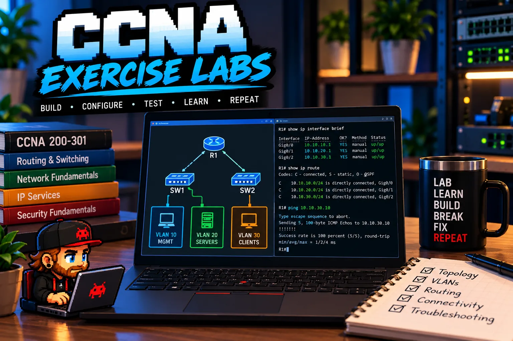

Connect two switches, assign access ports, and investigate a VLAN missing from a trunk.
Validation plan: Check VLAN membership and trunk state; compare same-VLAN reachability before and after correcting the allowed VLAN list.
A structured collection of hands-on networking labs used to reinforce Cisco switching, routing, network services, security, IPv4, IPv6, and troubleshooting concepts through practical configuration and validation.

I am developing exercise plans for configuration and troubleshooting practice. Proposed faults and validation steps are not completed test results.
These realistic exercise scenarios are proposed practice, not records of completed work or observed results.
Connect two switches, assign access ports, and investigate a VLAN missing from a trunk.
Validation plan: Check VLAN membership and trunk state; compare same-VLAN reachability before and after correcting the allowed VLAN list.
Connect two subnets and investigate an incorrect client default gateway.
Validation plan: Compare local-subnet reachability with gateway and remote-subnet reachability, then retest after the correction.
Investigate a client that fails to obtain a lease.
Validation plan: Check the client VLAN, DHCP pool, and relay configuration where applicable; verify the resulting address, gateway, and connectivity.
Configure administrative access and diagnose a failed SSH session.
Validation plan: Check management reachability, SSH configuration, authentication, and VTY settings; verify a successful login after correcting the fault.
This environment supports hands-on development alongside CCNA study. Instead of relying only on theory, each topic is reinforced through configuration, verification, failure testing, troubleshooting, and documentation.
The objective is to understand not only which command produces a result, but why the technology behaves the way it does and how to identify failures when the expected result does not occur.
These topics organize my practice; the list is not a record of completed exercises. VLANs, trunking, inter-VLAN routing, DHCP, and SSH are implemented in the physical network lab. OSPF is in progress; ACLs and IPv6 are planned extensions.
Lab topologies vary by topic, but the underlying approach uses multiple network segments and routing boundaries to create realistic troubleshooting scenarios.
ROUTER / L3 DEVICE
|
+-----------+-----------+
| |
| |
NETWORK A NETWORK B
| |
+----+----+ +----+----+
| SWITCH | | SWITCH |
+----+----+ +----+----+
| |
+-------+-------+ +-------+-------+
| | | |
VLAN A VLAN B VLAN C VLAN D
| | | |
Clients Clients Clients Services
Each lab includes validation rather than stopping once a configuration is entered. Device state, forwarding behavior, route selection, addressing, and end-to-end connectivity are checked to confirm that the network is behaving as intended.
My troubleshooting approach starts with understanding what should be happening, identifying where the actual behavior diverges from that expectation, and narrowing the problem through verification commands and traffic-path analysis.
Physical / Interface State
↓
VLAN Membership
↓
Trunking
↓
Addressing
↓
Gateway / Routing
↓
Route Selection
↓
ACL / Policy
↓
End-to-End Service
Hands-on labs reinforce that memorizing configuration syntax is only one part of networking. The deeper skill is understanding how traffic should move, what each device is responsible for, and which evidence confirms or disproves a troubleshooting hypothesis.
That mindset makes the lab useful beyond certification preparation because it develops the same structured reasoning required in production environments.
← Return to PortfolioSee the workstation used for study and lab access →
Explore the Field Journal for build and troubleshooting notes →